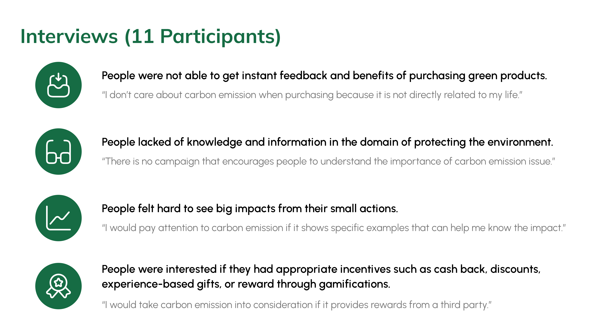
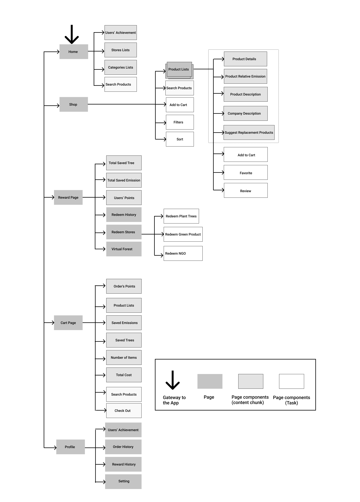
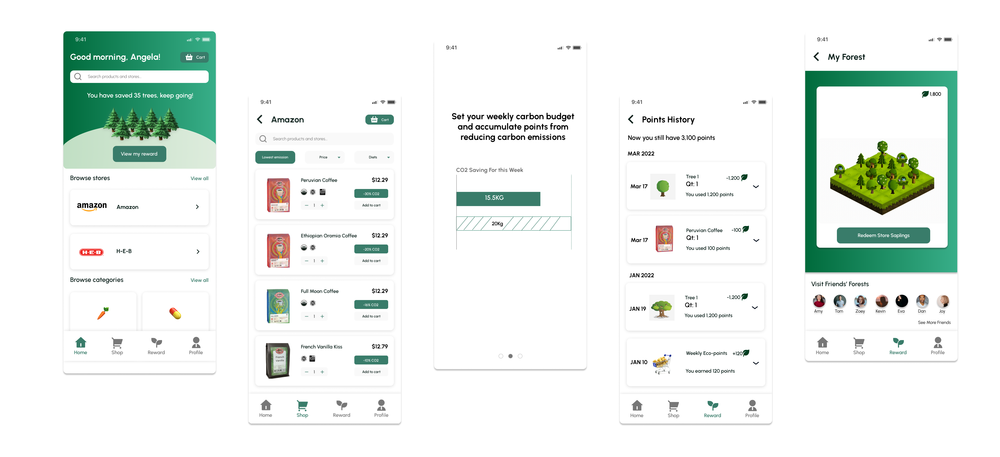
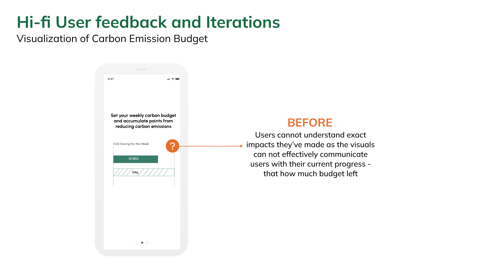
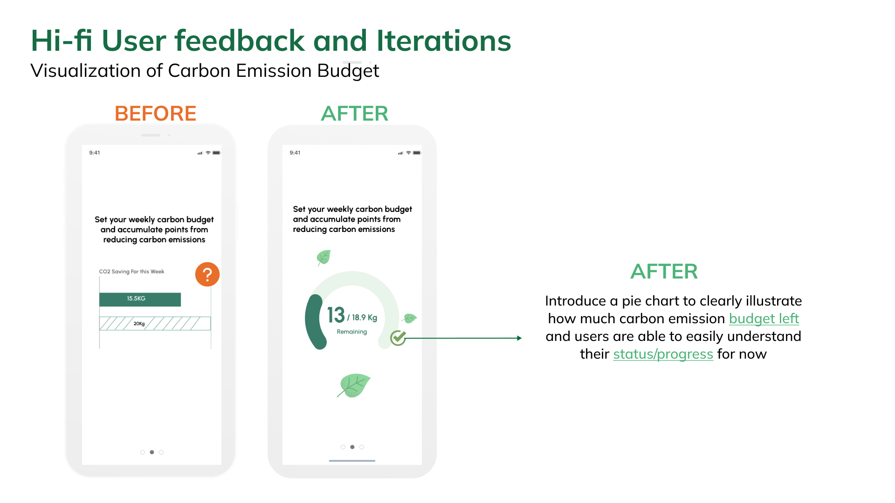

The average annual carbon footprint from food for a person in the United States is 2 tons, equivalent to the carbon sequestered by 7.9 acres of U.S. forests in a year. However, few grocery shopping platforms inform and encourage users to make green purchasing decisions. Therefore, we designed a mobile application that makes everyday green purchase decisions easier than ever, with diverse environmental metrics for everyday grocery consumer products and a financial incentive program that rewards green purchase decisions.
My role includes design concept initialization, user research (exploratory & in-depth), strategy & design discussions, mid-fidelity prototyping & testing, high-fidelity prototyping & testing, and final design with its validation.
Feb. 2022- May. 2022
Iris, Aril, Leah
UX Researcher
Product Designer
Figma
FigJam
Whiteboard
Slack
Zoom
Usertesting.com
Competitive Analysis
User Interviews
Journey Map
Information Architecture
Wireframes
Content Maps
Design System
Prototyping
User Testing
Iteration

Our team conducted a comprehensive competitive analysis to compile a list of concepts for examining how other products approached environmental awareness and determining how we could improve our approach.
Goal-Setting, Visualizing Impact, Reward, and Gamification are the aspects we considered while conducting competitive research.
Our Competitors:

Overall, competitive analysis provided us with the following insights:


We conducted 11 user interviews during the discovery phase of this project to gain a better understanding of users' grocery shopping habits. We mainly exploring what are the main determinants of their daily grocery shopping, what factors preventing them from buying environment-friendly products, and what possible incentives can be used to engage them into making more green decisions in their grocery shopping process.
The data was then used to create an affinity diagram in FigJam to help us find the insights. Overall, we discovered that when it came to grocery shopping, the majority of participants did not consider carbon emissions. Because:
According to our user interviews, we made a user journey map of daily online grocery shopping experiences to further find out pain points and improvement opportunities in this process. Stages of this online grocery shopping includes:
 After listing users' actions in different stages and their touch points in the online shopping process, we find some additional pain points that can help with a better online grocery shopping experience. Main pain points are as follows:
After listing users' actions in different stages and their touch points in the online shopping process, we find some additional pain points that can help with a better online grocery shopping experience. Main pain points are as follows:

After analyzing our user research findings, we decided to concentrate on these three pain points because they will influence the users' green decision.

Then, we came up with three design strategies to address user’s pain points in green shopping:
With our design strategies, we started to create the information architecture.

Rationale:
We used paper and pens to brainstorm and sketch our ideas individually, and we critiqued our initial designs together to define main features. Then we used Figma to implement our wireframes. We sketched four main pages for our app, including Home page, Search page, Product description page and Check out the page.
A: Global Search - users can search for products names, product categories, and stores.
B: Impact - users can see their impact of how many trees they have already saved. They can check details by navigating to the Reward section.
C: Browse stores - users can check previously visited stores and items added to the carts on the homepage.
D: Local search - users can search for specific items in the store.
E: Filters - users can sort search results with different priorities (e.g., highest rate of carbon emission reduction first).
F: Carbon emission tag - users can check the relative reduction rate in carbon emission compared to typical products.
G: Diet icon - Graphic icons that indicate different diets (e.g., vegan, gluten-free, locally produced).
H: Summary pop-up - users can see the subtotal of their carts from this store and possible environmental impacts after they check out.
I: Carbon emission tag - users can check the relative reduction rate in carbon emission compared to typical products.
J: Visualization bar chart of saved emissions - users can see the carbon footprints of this product compared to typical products.
K: Suggestions for replacement - Recommend users with lower carbon footprint products of the same category.
L: Carbon emission tag - users can check the relative reduction rate in carbon emission compared to typical products.
M: Total saved carbon emissions in the cart - users can see how much percentage of carbon emissions they saved in total by selecting a lower carbon footprint product. Users can also see the specific amount of carbon emissions they saved in this cart equals to saving how many trees.
N: Visualization bar chart of total carbon footprint - users can see the sum of carbon footprints in this cart compared to typical purchase.
In this section, we generated some content maps for several main flows which would be tested with users in further steps, illustrating how these pages are linked and flowing from one to one.

To gather our findings for further inspiration in both wireframing and high-fidelity prototyping, we created a moodboard.
 Based on the moodboard above, we created a style tile. We found there is an agreement that most designs use green colors as well as plant icons to illustrate the sense of environment and ecosystem. Therefore, we decided to use a variety of green shades as our color palette. Our high-fidelity mockup mainly utilizes green and white colors to emphasize the concept of sustainability, nature, and health.
Based on the moodboard above, we created a style tile. We found there is an agreement that most designs use green colors as well as plant icons to illustrate the sense of environment and ecosystem. Therefore, we decided to use a variety of green shades as our color palette. Our high-fidelity mockup mainly utilizes green and white colors to emphasize the concept of sustainability, nature, and health.

We implemented high-fidelity prototypes based on the style tile we initially decided. For the Hi-fi prototype, we designed pages for main flows including “homepage and product listing page” for users to search products and add to their carts, “product description”, “check-out and replacement product”, “profile”, “redeem and my forest page” - which covers most of sections on our application to make further user test sessions easier and accurate.
We conducted user testing with a Hi-fi prototype. We started revising our Hi-fi prototype based on feedback from the user testing session.
 


To validate our final design, we conducted 12 unmoderated usability testing sessions on UserTesting.com to validate our high-fidelity prototypes. We set up a main scenario with different tasks with post-task questions to test if there are any usability issues we need to fix. We received both qualitative responses and quantitative data from the participants.
 Click to see the prototype!
Click to see the prototype!